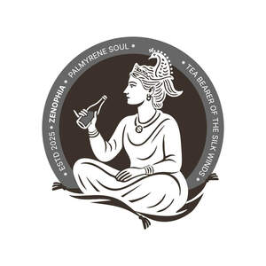

Trade Mark Journal No.2025/041 10 October 2025
UK00004271508 30 September 2025 (5,29,30,32)

- Class 5
- Dietetic food and substances adapted for medical or veterinary use, food for babies; dietary supplements for human beings and animals; diabetic fruit juice beverages adapted for medical purposes; vitamin fortified beverages for medical purposes; medicinal beverages; beverages for infants; beverages adapted for medicinal purposes; herbal beverages for medicinal use; electrolyte replacement beverages for medical purposes; malted milk beverages for medical purposes; milk sugar; almond milk for medical purposes; sugar substitutes for diabetics; dietetic beverages adapted for medical purposes; diabetic fruit juice beverages adapted for medical purposes; diabetic fruit juice beverages adapted for medical use; dietetic beverages for babies adapted for medical purposes; herbal supplements; powdered nutritional supplement energy drink mix; mineral waters for medical purposes; vitamin and mineral supplements; liquid vitamin supplements; meal replacement powders; dietary supplements in powder form; powdered nutritional supplement drink mix; protein powder dietary supplements; whey protein dietary supplements; protein supplement shakes; powdered fruit-flavored dietary supplement drink mix; dietary supplements for infants; diabetic drinks for medical purposes; probiotic supplements; prebiotic supplements; probiotic preparations for medical use.
- Class 29
- Milk tea, milk predominating; Milk; Milk beverages with cocoa; Milk drinks; Rice milk [milk substitute]; Rice milk for use as a milk substitute; Coconut milk [beverage]; Coconut milk used as beverage; Soya milk [milk substitute]; Milk beverages; Tea flavored eggs; Milk beverages, milk predominating; Hemp milk used as a milk substitute; Soy milk beverages; Rice milk; Kefir [milk beverage]; Soybean milk [soy milk]; Coconut milk; Soya milk; Cocoa flavored milk beverages; Flavoured milk drinks; Almond milk; Flavoured milk; Oat milk; Flavoured milk beverages; Milk based drinks [milk predominating]; Koumiss [milk beverage]; Milk beverages with high milk content; Fermented milk; Coconut milk powder; Kephir [milk beverage]; Sour milk; Milk based beverages [milk predominating]; Milk curds; Soya bean milk; Flavoured milk powder for making drinks; Kumiss [milk beverage]; Coconut milk for cooking; Peanut milk; Organic milk; Powdered goat milk; Milk powder for foodstuffs; Goat milk; Kumys [milk beverage]; Protein milk; Coffee creamer; Milk shakes; Dried milk for food; Acidophilus milk; Beverages made from milk; Oat-based beverages [milk substitute]; Soya-based beverages used as milk substitutes; Yoghurt made from goats milk; Kumyss [milk beverage]; Evaporated milk; Milk drinks containing fruits.
- Class 30
- Tea beverages with milk; Coffee beverages with milk; Tea; Milk chocolate; Cocoa beverages with milk; Chocolate beverages with milk; Chai tea; Milk chocolates; Milk chocolate teacakes; Barley tea; Iced tea; Tea (Iced -); Rooibos tea; Oolong tea; Chamomile tea; Tea beverages; Oolong tea [Chinese tea]; Fermented tea; Ginger tea; Peppermint tea; Tea bags for making non-medicated tea; Herbal tea; Chocolate beverages containing milk; Black tea [English tea]; Ginseng tea; Iced tea (Non-medicated -); Chocolate-based beverages with milk; Buckwheat tea; Tieguanyin tea; Darjeeling tea; Flavourings of tea; Kelp tea; Green tea; Tea for infusions; Tea bags; Lime tea; Instant Oolong tea; Tea beverages (Non- medicated -); Rosemary tea; Tea substitutes; Coffee, teas and cocoa and substitutes therefor; Jasmine tea; Iced tea mix powders; Chocolate coffee; Tea (Non-medicated -); White tea; Tea extracts; Ice lollies being milk flavoured; Beverages with tea base; Beverages with a tea base; Tea mixtures; Milk chocolate bars; Fruit flavoured tea [other than medicinal]; Roasted barley tea; Citron tea; Roasted barley tea [mugicha]; Tea pods; Flavourings of tea for food or beverages; Coffee-based beverage containing milk; Yellow tea.
- Class 32
- Non-alcoholic beverages; alcohol-free beverages or juices; malt beverages; carbonated beverages; drinking water containing vitamins; energy drinks enhanced with vitamins; sports drinks enhanced with vitamins; soft drinks; frozen carbonated beverages; whey beverages; isotonic beverages and energy drinks; preparations for making beverages; vegetable drinks; herbal drinks; carbonated drinks; non- alcoholic malt beverages; non-alcoholic beverages flavoured with coffee; slush drinks being smoothies; whey beverages and sports drinks; flavoured drinking waters; fruit flavored squashes and energy drinks containing vitamins; smoothies; concentrated preparations for beverages; energy drinks; flavored drinking waters and sports drinks containing vitamins; squashes being fruit flavored non-alcoholic iced drinks; energy drinks containing vitamins; slush drinks, namely, frozen fruit based beverages, frozen energy drinks, frozen herbal drinks; smoothies, pastilles and powders for making effervescing non- alcoholic beverages; beverage preparations; squashes being non-alcoholic fruit flavored iced drinks; slush drinks being frozen fruit based beverages; isotonic beverages; energy drinks and smoothies; preparations for making non-alcoholic fruit drinks; fruit-flavored iced drinks being squashes; energy drinks and sports drinks; soft drinks, tonic water, bitter lemon, lemonade, non-alcoholic soda beverages flavoured with tea and sports drinks; soya-based beverages, other than milk substitutes; rice-based beverages, other than milk substitutes; oat-based beverages, not being milk substitutes; brown rice beverages other than milk substitutes; protein drinks.
PALMYRA FLAVOURED DRINKS LIMITED